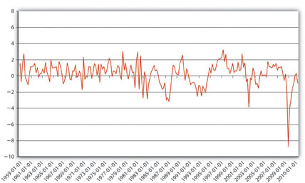
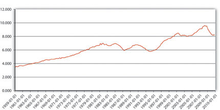
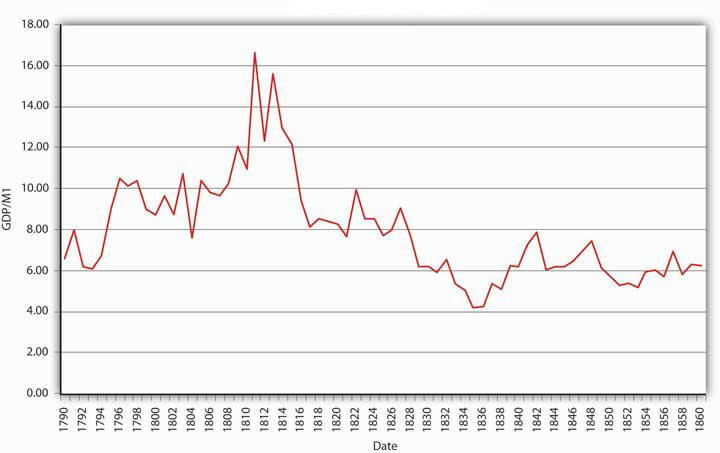
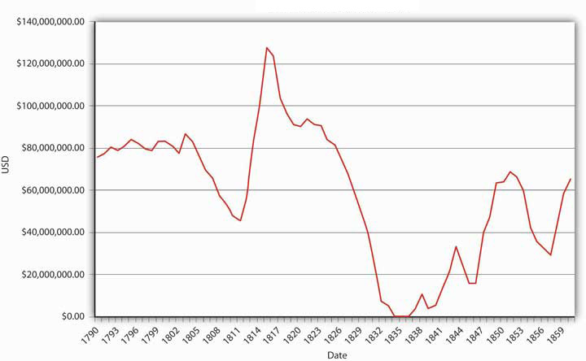
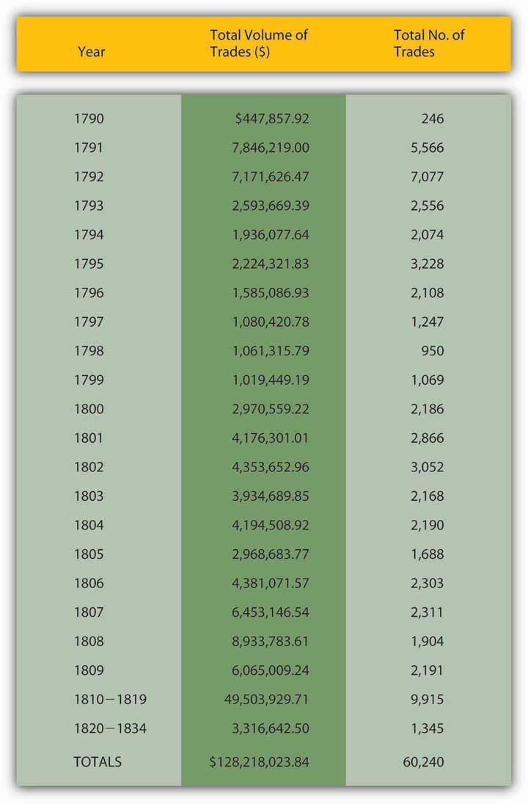

Until the 1970s, Friedman was more or less correct. Interest rates did not strongly affect the demand for money, so velocity was predictable and the quantity of money was closely linked to aggregate output. Except when nominal interest rates hit zero (as in Japan), the demand for money was somewhat sensitive to interest rates, so there was no so-called liquidity trap (where money demand is perfectly horizontal, leaving central bankers impotent). During the 1970s, however, money demand became more sensitive to interest rate changes, and velocity, output, and inflation became harder to predict. That’s one reason why central banks in the 1970s found that targeting monetary aggregates did not help them to meet their inflation or output goals.
Stare at Figure 20.1 "The quarterly volatility of velocity, 1959–2010" for a spell. How is it related to the discussion in this chapter? Then take a gander at Figure 20.2 "The velocity of money in the United States, 1959–2010". In addition to giving us a new perspective on Figure 20.1 "The quarterly volatility of velocity, 1959–2010", it shows that the velocity of money (velocity = GDP/M1 because MV = PY can be solved for V: V = PY/M) has increased considerably since the late 1950s. Why might that be?
Figure 20.1 The quarterly volatility of velocity, 1959–2010
Figure 20.2 The velocity of money in the United States, 1959–2010
The chapter makes the point that velocity became much less stable and much less predictable in the 1970s and thereafter. Figure 20.1 "The quarterly volatility of velocity, 1959–2010" shows that by measuring the quarterly change in velocity. Before 1970, velocity went up and down between −1 and 3 percent in pretty regular cycles. Thereafter, the variance increased to between almost −4 and 4 percent, and the pattern has become much less regular. This is important because it shows why Friedman’s modern quantity theory of money lost much of its explanatory power in the 1970s, leading to changes in central bank targeting and monetary theory.
Figure 20.2 "The velocity of money in the United States, 1959–2010" suggests that velocity likely increased in the latter half of the twentieth century due to technological improvements that allowed each unit of currency to be used in more transactions over the course of a year. More efficient payment systems (electronic funds transfer), increased use of credit, lower transaction costs, and financial innovations like cash management accounts have all helped to increase V, to help each dollar move through more hands or the same number of hands in less time.
The breakdown of the quantity theory had severe repercussions for central banking, central bankers, and monetary theorists. That was bad news for them (and for people like myself who grew up in that awful decade), and it is bad news for us because our exploration of monetary theory must continue. Monetary economists have learned a lot over the last few decades by constantly testing, critiquing, and improving models like those of Keynes and Friedman, and we’re all going to follow along so you’ll know precisely where monetary theory and policy stand at present.
Examine Figure 20.3 "Velocity of money, 1790–1860", Figure 20.4 "U.S. national debt, 1790–1860", and Figure 20.5 "Volume of public securities trading in select U.S. markets, by year, 1790–1834" carefully. Why might velocity have trended upward to approximately 1815 and then fallen? Hint: Alexander Hamilton argued in the early 1790s that “in countries in which the national debt is properly funded, and an object of established confidence, it answers most of the purposes of money. Transfers of stock or public debt are there equivalent to payments in specie; or in other words, stock, in the principal transactions of business, passes current as specie. The same thing would, in all probability happen here, under the like circumstances”—if his funding plan was adopted. It was, and interest rates fell dramatically as a result and thereafter remained at around 6 percent in peacetime.
Figure 20.3 Velocity of money, 1790–1860
Figure 20.4 U.S. national debt, 1790–1860
Figure 20.5 Volume of public securities trading in select U.S. markets, by year, 1790–1834
Velocity rises when there are money substitutes, highly liquid assets that allow economic agents to earn interest. Apparently Hamilton was right—the national debt answered most of the purposes of money. Ergo, not as much M1 was needed to support the gross domestic product (GDP) and price level, so velocity rose during the period that the debt was large. It then dropped as the government paid off the debt, requiring the use of more M1.